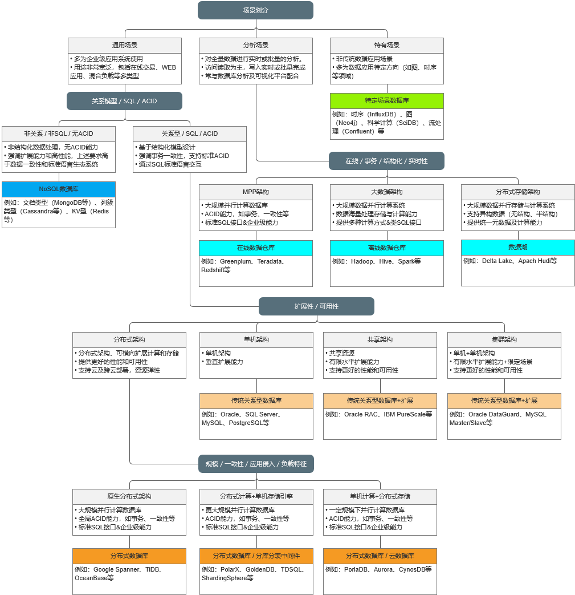

国产数据库近200家！谈谈数据库技术选型

1. 技术选型：场景区分
当用户面对数据库选型时，首先是做场景的大致区分。这里我们将业务场景分为三种类型：❖ 通用场景第一类为通用场景，是具有较为普遍的意义，绝大多数业务场景都是适用的。这里面包含了企业常规的业务系统，也包括像互联网应用、实时交互分析等场景。❖ 分析场景第二类为分析场景，这类场景比较明确，是对企业内包含线上活跃和历史在内的全量数据进行实时或批量的分析。这类场景主要强调对数据的加工处理能力，并将结果在数据可视化平台进行输出。❖ 特定场景第三类较为特殊，此部分场景属于相对较窄的范围，属于特定方向的数据应用。如比较常见的图、时序等。这类应用有别于传统的业务应用。
2. 技术选型：通用场景
针对通用场景，可进一步安装数据模型、标准SQL访问及ACID能力做进一步区分。大的方面可分为两类：
❖ 非关系模型+无SQL+无ACID此类产品提供较为多元的数据访问需求。随着互联网兴起，针对非关系模型的数据受到更多的重视。这类数据通常提供专有访问接口且对ACID能力没有需求，更多强调是对异构数据的存储和扩展能力。其根据存储数据模型，又可进一步细分为KV、文档型、宽列型等。这类产品与后面谈到的特有场景数据库产品不同，其往往是作为生产业务系统中的一部分，但两者有时是有交叉的。❖ 关系模型+SQL+ACID绝大多数数据库产品都是在此分类，它们提供结构化数据的存储，提供SQL访问接口，支持ACID能力，强调事务等能力。这类产品种类众多、架构各异，因此后续按扩展能力、可用性水平等做进一步划分。1).按扩展性/可用性划分从这个维度进一步细分通用数据库场景产品，可按照其架构分为单机、共享、集群、分布式等多种架构。
单机架构
单机数据库是大家最为熟悉的，提供基础数据库功能。从扩展性来说，一般只具有Scale UP的能力，通过升级硬件来进行扩展其性能。从可用性角度来看，单机的可用性有限，一般作为非核心系统或者作为研发、测试用途。
共享架构
共享架构数据库，是针对单机库的升级，通过共享存储资源，将上层计算资源实现水平扩展，可以提供更好的性能及可用性表现。从扩展性来说，其能提供计算能力的有限扩展，存储能力扩展则取决于底层存储。从可用性来看，可以解决实例级、主机级故障，提供整体可用性。
集群架构
集群架构数据库，是提供了在单机/共享模式之上的数据库架构。通过复制技术，可实现数据库主从的工作模式。从扩展性上看，这种方式可提供提供一定范围内计算资源的水平扩展，这里强调是一定范围是指计算能力不能“完整扩展”，如仅能提供只读的扩展能力。对可用性来说，通过集群可实现主出现问题时，切换到从的能力，进而提升整体可用性。
分布式架构
分布式架构数据库，近些年来很火热，其突破单机、共享、集群架构下的数据库局限。通过存算分离技术，可实现上层计算资源、底层存储资源的水平扩展，进而满足更高性能、更大容量的承载。从扩展性来看，其扩展能力要远远优于前几种架构。从可用性来看，分布式架构因其多副本技术等，原生提供了更高的可用性。但这部分的具体实现技术上有着不同的方式，下面针对这部分加以说明。
原生分布式架构
原生分布式架构，通过存算分离技术，可实现计算与存储的独立扩展。但受到其管理能力限制，一般扩展能力较后者稍差。技术上按分布式重构了整个架构，可提供全局的MVCC、标准ACID、数据强一致等能力。对于用户来说，可类似普通数据库一样去使用，无应用浸入性。在性能上，可提供很大的吞吐量，但受限于架构在响应时间上有一定劣势。此外，还有些产品通过构造第二引擎及MPP的引入，也可提供一定的在线分析能力，满足类似HTAP的要求。
分布式计算+单机引擎
这种架构利用成熟的单机引擎与上层分布式计算层的结合，可实现存算分离。其扩展能力，较前者有更大的扩展能力。技术上此类产品仅重构了部分数据库架构，可通过上层与底层的部分改造，实现全局MVCC、ACID和强一致能力。但从实现上看，并不是十分优雅。此外，这种架构是需要用户明确数据分片方法，带有一定的侵入性，但也因这点其带来较好的延时表现。在性能上，可提供很大的吞吐量。
单机计算+分布式存储
这种架构是以分布式存储为基础，在其上构建单机的计算层。通过底层存储和上层无状态计算节点的扩展能力，实现一定程度的存算分离和弹性扩展。但从整体扩展能力来看，相较于前两者，有着明显的劣势。且受限于底座能力的约束，必须满足一定的部署条件。从产品能力上看，其是非分布式数据库最为接近的，用户几乎无感。
针对分析场景，可以做进一步的功能细分。这里可从支持事务情况、在线性、数据模型及实时性要求来做区分。
MPP架构
大数据架构
分布式存储架构
4. 技术选型：特定场景
对于特定场景部分，其根据数据专项应用领域，通常是比较好选择的。例如针对图数据库领域，Neo4j等是常规的选择；针对时序数据库InfluxDB等是常规的选择。此类产品选择，往往可选择的产品范围不同，只需关注被选产品的核心能力即可。